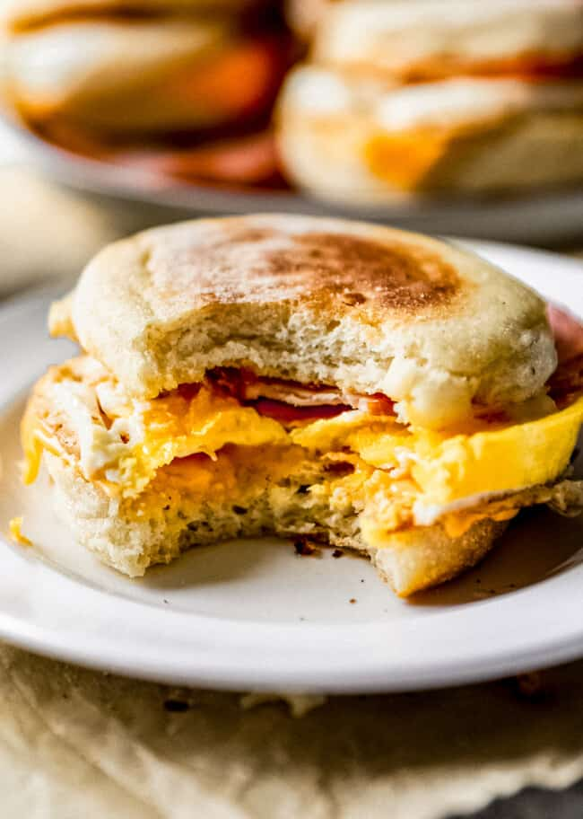

Egg Mcmuffin

If you are a lover of McDonald’s famous egg McMuffins, then you are going to LOVE this homemade recipe!
Toasted muffins loaded with Canadian bacon, cheese, and of course, a fried egg, these are just as good as the breakfast you’d buy at the golden arches!
Ingredients
- 6 English Muffins
- 6 slices of canadian bacon
- 6 slices of cheese
- 1 tablespoon of butter
Directions
- Heat 1 tablespoon of butter in a large skillet over medium heat.
- Once the butter has melted, cook the Canadian bacon slices in the pan for a minute or two on each side.
Set the bacon aside on a plate.
- Crack 1 egg into the ring. Use a fork to gently break up the yolk. Season with salt.
- Pour 1/4 cup of water into the pan around the ring, cover the pan, and cook for about 1 minute until the egg is cooked through.
- Top each egg with a slice of Canadian bacon. Then, close the sandwich with the other English muffin half.